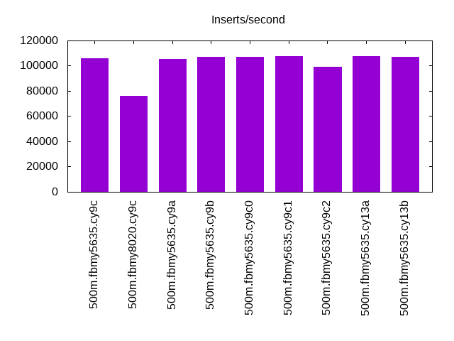

Introduction
This is a report for the insert benchmark with 500M docs and 1 client(s). It is generated by scripts (bash, awk, sed) and Tufte might not be impressed. An overview of the insert benchmark is here and a short update is here. Below, by DBMS, I mean DBMS+version.config. An example is my8020.c10b40 where my means MySQL, 8020 is version 8.0.20 and c10b40 is the name for the configuration file.
The test server is an Intel NUC with 4 cores, 16G RAM and a Samsung 970 EVO. More details are here. Clients and the DBMS share one server. The per-database configs are in the per-database subdirectories here.
The tested DBMS are:
- fbmy5635.cy9c - FB MySQL 5.6.35, MyRocks and the cy9c config
- fbmy8020.cy9c - FB MySQL 8.0.20, MyRocks and the cy9c config
- fbmy5635.cy9a - FB MySQL 5.6.35, MyRocks and the cy9a config
- fbmy5635.cy9b - FB MySQL 5.6.35, MyRocks and the cy9b config
- fbmy5635.cy9c0 - FB MySQL 5.6.35, MyRocks and the cy9c0 config
- fbmy5635.cy9c1 - FB MySQL 5.6.35, MyRocks and the cy9c1 config
- fbmy5635.cy9c2 - FB MySQL 5.6.35, MyRocks and the cy9c2 config
- fbmy5635.cy13a - FB MySQL 5.6.35, MyRocks and the cy13a config
- fbmy5635.cy13b - FB MySQL 5.6.35, MyRocks and the cy13b config
Contents
- Summary
- l.i0: load without secondary indexes
- l.x: create secondary indexes
- l.i1: continue load after secondary indexes created
- q100.1: range queries with 100 insert/s per client
- q500.1: range queries with 500 insert/s per client
- q1000.1: range queries with 1000 insert/s per client
Summary
The numbers are inserts/s for l.i0 and l.i1, indexed docs (or rows) /s for l.x and queries/s for q*.2. The values are the average rate over the entire test for inserts (IPS) and queries (QPS). The range of values for IPS and QPS is split into 3 parts: bottom 25%, middle 50%, top 25%. Values in the bottom 25% have a red background, values in the top 25% have a green background and values in the middle have no color. A gray background is used for values that can be ignored because the DBMS did not sustain the target insert rate. Red backgrounds are not used when the minimum value is within 80% of the max value.
| dbms | l.i0 | l.x | l.i1 | q100.1 | q500.1 | q1000.1 |
|---|---|---|---|---|---|---|
| 500m.fbmy5635.cy9c | 105820 | 101605 | 42194 | 4699 | 4724 | 4648 |
| 500m.fbmy8020.cy9c | 75930 | 96099 | 34483 | 4181 | 4193 | 4158 |
| 500m.fbmy5635.cy9a | 105374 | 102522 | 42194 | 4726 | 4712 | 4667 |
| 500m.fbmy5635.cy9b | 107319 | 101214 | 42735 | 4709 | 4683 | 4670 |
| 500m.fbmy5635.cy9c0 | 106838 | 99920 | 43290 | 4792 | 4832 | 4728 |
| 500m.fbmy5635.cy9c1 | 107643 | 99661 | 43290 | 4642 | 4653 | 4602 |
| 500m.fbmy5635.cy9c2 | 99423 | 99900 | 40322 | 4596 | 4646 | 4591 |
| 500m.fbmy5635.cy13a | 107643 | 101051 | 42553 | 4698 | 4666 | 4562 |
| 500m.fbmy5635.cy13b | 106838 | 102291 | 42373 | 4993 | 4959 | 4820 |
This lists the average rate of inserts/s for the tests that do inserts concurrent with queries. For such tests the query rate is listed in the table above. The read+write tests are setup so that the insert rate should match the target rate every second. Cells that are not at least 95% of the target have a red background to indicate a failure to satisfy the target.
| dbms | q100.1 | q500.1 | q1000.1 |
|---|---|---|---|
| fbmy5635.cy9c | 100 | 500 | 999 |
| fbmy8020.cy9c | 100 | 499 | 999 |
| fbmy5635.cy9a | 100 | 500 | 999 |
| fbmy5635.cy9b | 100 | 499 | 999 |
| fbmy5635.cy9c0 | 100 | 500 | 999 |
| fbmy5635.cy9c1 | 100 | 500 | 999 |
| fbmy5635.cy9c2 | 100 | 500 | 999 |
| fbmy5635.cy13a | 100 | 500 | 999 |
| fbmy5635.cy13b | 100 | 499 | 999 |
| target | 100 | 500 | 1000 |
l.i0
l.i0: load without secondary indexes. Graphs for performance per 1-second interval are here.
Average throughput:
Insert response time histogram: each cell has the percentage of responses that take <= the time in the header and max is the max response time in seconds. For the max column values in the top 25% of the range have a red background and in the bottom 25% of the range have a green background. The red background is not used when the min value is within 80% of the max value.
| dbms | 256us | 1ms | 4ms | 16ms | 64ms | 256ms | 1s | 4s | 16s | gt | max |
|---|---|---|---|---|---|---|---|---|---|---|---|
| fbmy5635.cy9c | 98.015 | 1.933 | 0.049 | nonzero | 0.004 | 0.198 | |||||
| fbmy8020.cy9c | 99.826 | 0.157 | 0.017 | nonzero | 0.066 | ||||||
| fbmy5635.cy9a | 97.637 | 2.312 | 0.047 | nonzero | 0.004 | 0.183 | |||||
| fbmy5635.cy9b | 98.343 | 1.602 | 0.051 | nonzero | 0.004 | 0.132 | |||||
| fbmy5635.cy9c0 | 98.283 | 1.663 | 0.051 | nonzero | 0.004 | 0.165 | |||||
| fbmy5635.cy9c1 | 98.523 | 1.425 | 0.048 | nonzero | 0.004 | 0.175 | |||||
| fbmy5635.cy9c2 | 81.785 | 18.157 | 0.054 | nonzero | 0.004 | 0.129 | |||||
| fbmy5635.cy13a | 98.752 | 1.196 | 0.048 | nonzero | 0.004 | 0.148 | |||||
| fbmy5635.cy13b | 98.045 | 1.902 | 0.050 | 0.003 | 0.001 | 0.112 |
Performance metrics for the DBMS listed above. Some are normalized by throughput, others are not. Legend for results is here.
ips qps rps rmbps wps wmbps rpq rkbpq wpi wkbpi csps cpups cspq cpupq dbgb1 dbgb2 rss maxop p50 p99 tag 105820 0 0 0.0 55.4 19.0 0.000 0.000 0.001 0.184 10969 47.6 0.104 18 15.7 16.1 1.1 0.198 106422 93534 500m.fbmy5635.cy9c 75930 0 0 0.0 58.7 17.5 0.000 0.000 0.001 0.235 8228 42.7 0.108 22 15.7 16.3 1.5 0.066 76119 70752 500m.fbmy8020.cy9c 105374 0 0 0.0 56.0 18.9 0.000 0.000 0.001 0.184 10930 46.9 0.104 18 15.7 16.1 1.1 0.183 105924 93497 500m.fbmy5635.cy9a 107319 0 0 0.0 56.0 19.3 0.000 0.000 0.001 0.184 11110 47.7 0.104 18 15.7 16.1 1.1 0.132 108013 95295 500m.fbmy5635.cy9b 106838 0 0 0.0 56.3 19.2 0.000 0.000 0.001 0.184 11059 47.3 0.104 18 15.7 16.1 1.1 0.165 107424 94897 500m.fbmy5635.cy9c0 107643 0 0 0.0 56.1 19.3 0.000 0.000 0.001 0.184 11139 47.7 0.103 18 15.7 16.1 1.1 0.175 108282 95294 500m.fbmy5635.cy9c1 99423 0 0 0.0 52.3 17.9 0.000 0.000 0.001 0.184 10316 46.4 0.104 19 15.7 16.1 1.1 0.129 99990 88106 500m.fbmy5635.cy9c2 107643 0 12 5.2 55.9 19.3 0.000 0.050 0.001 0.184 10880 47.9 0.101 18 15.7 16.1 1.1 0.148 108281 95198 500m.fbmy5635.cy13a 106838 0 0 0.0 53.1 19.0 0.000 0.000 0.000 0.182 10625 47.2 0.099 18 16.4 28.7 13.0 0.112 107283 95496 500m.fbmy5635.cy13b
l.x
l.x: create secondary indexes.
Average throughput:
Performance metrics for the DBMS listed above. Some are normalized by throughput, others are not. Legend for results is here.
ips qps rps rmbps wps wmbps rpq rkbpq wpi wkbpi csps cpups cspq cpupq dbgb1 dbgb2 rss maxop p50 p99 tag 101605 0 67 21.6 38.7 14.9 0.001 0.218 0.000 0.150 687 24.8 0.007 10 32.3 32.7 10.7 0.008 NA NA 500m.fbmy5635.cy9c 96099 0 71 23.7 36.6 14.1 0.001 0.252 0.000 0.150 829 24.9 0.009 10 32.2 32.8 12.9 0.008 NA NA 500m.fbmy8020.cy9c 102522 0 69 21.8 39.4 15.1 0.001 0.218 0.000 0.150 729 24.8 0.007 10 32.3 32.7 10.7 0.009 NA NA 500m.fbmy5635.cy9a 101214 0 68 21.5 38.2 14.9 0.001 0.218 0.000 0.150 728 24.8 0.007 10 32.3 32.7 10.8 0.010 NA NA 500m.fbmy5635.cy9b 99920 0 66 21.2 36.9 14.7 0.001 0.218 0.000 0.150 717 24.8 0.007 10 32.3 32.7 10.7 0.008 NA NA 500m.fbmy5635.cy9c0 99661 0 66 21.2 38.0 14.6 0.001 0.218 0.000 0.150 672 24.8 0.007 10 32.3 32.7 10.7 0.005 NA NA 500m.fbmy5635.cy9c1 99900 0 66 21.2 37.4 14.7 0.001 0.218 0.000 0.150 715 24.8 0.007 10 32.3 32.7 10.7 0.007 NA NA 500m.fbmy5635.cy9c2 101051 0 58 21.5 23.7 14.8 0.001 0.218 0.000 0.150 730 24.4 0.007 10 32.3 32.7 11.7 0.009 NA NA 500m.fbmy5635.cy13a 102291 0 77 25.7 50.1 15.0 0.001 0.258 0.000 0.150 534 24.6 0.005 10 32.8 45.1 12.9 0.004 NA NA 500m.fbmy5635.cy13b
l.i1
l.i1: continue load after secondary indexes created. Graphs for performance per 1-second interval are here.
Average throughput:

Insert response time histogram: each cell has the percentage of responses that take <= the time in the header and max is the max response time in seconds. For the max column values in the top 25% of the range have a red background and in the bottom 25% of the range have a green background. The red background is not used when the min value is within 80% of the max value.
| dbms | 256us | 1ms | 4ms | 16ms | 64ms | 256ms | 1s | 4s | 16s | gt | max |
|---|---|---|---|---|---|---|---|---|---|---|---|
| fbmy5635.cy9c | 6.562 | 93.314 | 0.116 | 0.007 | 0.001 | 0.084 | |||||
| fbmy8020.cy9c | 99.825 | 0.163 | 0.011 | 0.001 | 0.121 | ||||||
| fbmy5635.cy9a | 7.111 | 92.769 | 0.112 | 0.009 | 0.001 | 0.069 | |||||
| fbmy5635.cy9b | 7.635 | 92.221 | 0.138 | 0.006 | 0.001 | 0.081 | |||||
| fbmy5635.cy9c0 | 8.713 | 91.179 | 0.103 | 0.005 | 0.051 | ||||||
| fbmy5635.cy9c1 | 8.153 | 91.748 | 0.092 | 0.005 | 0.001 | 0.067 | |||||
| fbmy5635.cy9c2 | 0.776 | 99.124 | 0.096 | 0.003 | 0.051 | ||||||
| fbmy5635.cy13a | 7.271 | 92.593 | 0.092 | 0.042 | 0.002 | 0.155 | |||||
| fbmy5635.cy13b | 4.805 | 95.112 | 0.073 | 0.009 | 0.001 | 0.071 |
Performance metrics for the DBMS listed above. Some are normalized by throughput, others are not. Legend for results is here.
ips qps rps rmbps wps wmbps rpq rkbpq wpi wkbpi csps cpups cspq cpupq dbgb1 dbgb2 rss maxop p50 p99 tag 42194 0 26 3.1 171.5 75.2 0.001 0.075 0.004 1.825 10433 57.4 0.247 54 33.6 35.3 10.6 0.084 42353 33264 500m.fbmy5635.cy9c 34483 0 0 0.0 170.0 61.4 0.000 0.000 0.005 1.823 9089 54.5 0.264 63 33.5 35.3 10.9 0.121 34425 30428 500m.fbmy8020.cy9c 42194 0 24 2.9 170.8 74.8 0.001 0.071 0.004 1.815 10452 57.1 0.248 54 33.5 35.2 10.6 0.069 42403 35775 500m.fbmy5635.cy9a 42735 0 24 3.0 170.9 75.0 0.001 0.071 0.004 1.796 10710 57.5 0.251 54 33.5 35.2 10.6 0.081 42869 35325 500m.fbmy5635.cy9b 43290 0 40 4.4 129.8 55.4 0.001 0.104 0.003 1.310 10187 51.1 0.235 47 34.0 35.7 10.6 0.051 43753 36260 500m.fbmy5635.cy9c0 43290 0 1 0.1 105.8 43.7 0.000 0.002 0.002 1.034 9671 46.7 0.223 43 33.5 35.1 10.6 0.067 43554 35411 500m.fbmy5635.cy9c1 40322 0 1 0.1 93.7 38.5 0.000 0.002 0.002 0.978 8993 44.7 0.223 44 33.5 35.1 10.6 0.051 40455 33213 500m.fbmy5635.cy9c2 42553 0 121 58.9 168.6 74.4 0.003 1.417 0.004 1.791 8541 56.5 0.201 53 33.5 35.2 11.7 0.155 42804 34523 500m.fbmy5635.cy13a 42373 0 32 11.2 112.8 37.2 0.001 0.270 0.003 0.899 8388 44.3 0.198 42 33.8 47.3 13.1 0.071 42003 38258 500m.fbmy5635.cy13b
q100.1
q100.1: range queries with 100 insert/s per client. Graphs for performance per 1-second interval are here.
Average throughput:
Query response time histogram: each cell has the percentage of responses that take <= the time in the header and max is the max response time in seconds. For max values in the top 25% of the range have a red background and in the bottom 25% of the range have a green background. The red background is not used when the min value is within 80% of the max value.
| dbms | 256us | 1ms | 4ms | 16ms | 64ms | 256ms | 1s | 4s | 16s | gt | max |
|---|---|---|---|---|---|---|---|---|---|---|---|
| fbmy5635.cy9c | 97.813 | 2.184 | 0.002 | nonzero | 0.015 | ||||||
| fbmy8020.cy9c | 95.955 | 4.042 | 0.003 | nonzero | nonzero | 0.016 | |||||
| fbmy5635.cy9a | 97.768 | 2.229 | 0.003 | nonzero | 0.015 | ||||||
| fbmy5635.cy9b | 97.774 | 2.222 | 0.004 | nonzero | 0.015 | ||||||
| fbmy5635.cy9c0 | 97.654 | 2.344 | 0.002 | nonzero | nonzero | 0.017 | |||||
| fbmy5635.cy9c1 | 97.646 | 2.351 | 0.003 | nonzero | nonzero | 0.019 | |||||
| fbmy5635.cy9c2 | 97.864 | 2.134 | 0.002 | nonzero | nonzero | 0.016 | |||||
| fbmy5635.cy13a | 97.529 | 2.457 | 0.013 | 0.001 | 0.016 | ||||||
| fbmy5635.cy13b | 97.611 | 2.382 | 0.007 | nonzero | nonzero | 0.021 |
Insert response time histogram: each cell has the percentage of responses that take <= the time in the header and max is the max response time in seconds. For max values in the top 25% of the range have a red background and in the bottom 25% of the range have a green background. The red background is not used when the min value is within 80% of the max value.
| dbms | 256us | 1ms | 4ms | 16ms | 64ms | 256ms | 1s | 4s | 16s | gt | max |
|---|---|---|---|---|---|---|---|---|---|---|---|
| fbmy5635.cy9c | 0.139 | 99.792 | 0.069 | 0.013 | |||||||
| fbmy8020.cy9c | 99.882 | 0.097 | 0.021 | 0.019 | |||||||
| fbmy5635.cy9a | 0.076 | 99.903 | 0.021 | 0.004 | |||||||
| fbmy5635.cy9b | 0.681 | 99.271 | 0.049 | 0.004 | |||||||
| fbmy5635.cy9c0 | 1.007 | 98.979 | 0.007 | 0.007 | 0.016 | ||||||
| fbmy5635.cy9c1 | 1.007 | 98.958 | 0.035 | 0.010 | |||||||
| fbmy5635.cy9c2 | 99.931 | 0.069 | 0.005 | ||||||||
| fbmy5635.cy13a | 0.535 | 99.396 | 0.069 | 0.009 | |||||||
| fbmy5635.cy13b | 0.194 | 99.799 | 0.007 | 0.015 |
Performance metrics for the DBMS listed above. Some are normalized by throughput, others are not. Legend for results is here.
ips qps rps rmbps wps wmbps rpq rkbpq wpi wkbpi csps cpups cspq cpupq dbgb1 dbgb2 rss maxop p50 p99 tag 100 4699 22 0.2 4.1 0.4 0.005 0.038 0.041 3.829 18126 25.9 3.858 220 33.5 35.3 10.6 0.015 4715 4171 500m.fbmy5635.cy9c 100 4181 22 0.2 3.7 0.3 0.005 0.043 0.037 2.658 16286 25.9 3.895 248 33.5 35.5 10.9 0.016 4187 3740 500m.fbmy8020.cy9c 100 4726 22 0.2 3.7 0.2 0.005 0.040 0.037 2.405 18225 26.0 3.856 220 33.5 35.3 10.6 0.015 4733 4219 500m.fbmy5635.cy9a 100 4709 22 0.2 3.7 0.2 0.005 0.040 0.038 2.513 18163 25.9 3.857 220 33.5 35.3 10.6 0.015 4717 4139 500m.fbmy5635.cy9b 100 4792 22 0.2 4.0 0.4 0.005 0.038 0.041 3.652 18484 25.9 3.857 216 33.5 35.3 10.6 0.017 4779 4123 500m.fbmy5635.cy9c0 100 4642 22 0.2 3.7 0.2 0.005 0.039 0.037 2.144 17912 25.8 3.859 222 33.5 35.3 10.6 0.019 4621 4011 500m.fbmy5635.cy9c1 100 4596 22 0.2 3.7 0.2 0.005 0.039 0.037 2.291 17725 25.8 3.857 225 33.5 35.3 10.6 0.016 4603 3902 500m.fbmy5635.cy9c2 100 4698 43 0.5 3.8 0.3 0.009 0.105 0.038 3.269 18149 25.9 3.863 221 33.5 35.3 11.6 0.016 4731 3868 500m.fbmy5635.cy13a 100 4993 35 0.3 3.6 0.2 0.007 0.064 0.036 2.045 19259 26.1 3.857 209 33.9 47.5 12.9 0.021 5021 4043 500m.fbmy5635.cy13b
q500.1
q500.1: range queries with 500 insert/s per client. Graphs for performance per 1-second interval are here.
Average throughput:
Query response time histogram: each cell has the percentage of responses that take <= the time in the header and max is the max response time in seconds. For max values in the top 25% of the range have a red background and in the bottom 25% of the range have a green background. The red background is not used when the min value is within 80% of the max value.
| dbms | 256us | 1ms | 4ms | 16ms | 64ms | 256ms | 1s | 4s | 16s | gt | max |
|---|---|---|---|---|---|---|---|---|---|---|---|
| fbmy5635.cy9c | 97.805 | 2.194 | 0.001 | nonzero | 0.011 | ||||||
| fbmy8020.cy9c | 95.896 | 4.101 | 0.003 | nonzero | 0.010 | ||||||
| fbmy5635.cy9a | 97.802 | 2.197 | 0.001 | nonzero | 0.009 | ||||||
| fbmy5635.cy9b | 97.727 | 2.272 | 0.001 | nonzero | 0.009 | ||||||
| fbmy5635.cy9c0 | 97.930 | 2.068 | 0.001 | nonzero | nonzero | 0.020 | |||||
| fbmy5635.cy9c1 | 97.707 | 2.292 | 0.001 | nonzero | 0.013 | ||||||
| fbmy5635.cy9c2 | 97.816 | 2.182 | 0.001 | nonzero | 0.013 | ||||||
| fbmy5635.cy13a | 96.743 | 3.250 | 0.006 | 0.001 | nonzero | 0.016 | |||||
| fbmy5635.cy13b | 97.700 | 2.296 | 0.004 | nonzero | nonzero | 0.019 |
Insert response time histogram: each cell has the percentage of responses that take <= the time in the header and max is the max response time in seconds. For max values in the top 25% of the range have a red background and in the bottom 25% of the range have a green background. The red background is not used when the min value is within 80% of the max value.
| dbms | 256us | 1ms | 4ms | 16ms | 64ms | 256ms | 1s | 4s | 16s | gt | max |
|---|---|---|---|---|---|---|---|---|---|---|---|
| fbmy5635.cy9c | 0.331 | 99.633 | 0.035 | 0.001 | 0.048 | ||||||
| fbmy8020.cy9c | 99.904 | 0.079 | 0.017 | 0.029 | |||||||
| fbmy5635.cy9a | 0.643 | 99.321 | 0.035 | 0.001 | 0.033 | ||||||
| fbmy5635.cy9b | 2.860 | 97.119 | 0.019 | 0.001 | 0.022 | ||||||
| fbmy5635.cy9c0 | 3.378 | 96.600 | 0.018 | 0.004 | 0.053 | ||||||
| fbmy5635.cy9c1 | 1.722 | 98.253 | 0.024 | 0.001 | 0.033 | ||||||
| fbmy5635.cy9c2 | 0.129 | 99.833 | 0.036 | 0.001 | 0.022 | ||||||
| fbmy5635.cy13a | 1.471 | 98.474 | 0.054 | 0.001 | 0.028 | ||||||
| fbmy5635.cy13b | 0.439 | 99.528 | 0.031 | 0.003 | 0.023 |
Performance metrics for the DBMS listed above. Some are normalized by throughput, others are not. Legend for results is here.
ips qps rps rmbps wps wmbps rpq rkbpq wpi wkbpi csps cpups cspq cpupq dbgb1 dbgb2 rss maxop p50 p99 tag 500 4724 0 0.0 5.8 1.1 0.000 0.000 0.012 2.210 18269 26.6 3.867 225 34.0 34.2 10.6 0.011 4731 4539 500m.fbmy5635.cy9c 499 4193 0 0.0 6.2 1.2 0.000 0.000 0.012 2.452 16392 26.8 3.910 256 34.0 34.4 10.9 0.010 4187 4075 500m.fbmy8020.cy9c 500 4712 0 0.0 6.3 1.2 0.000 0.000 0.013 2.517 18229 26.7 3.869 227 34.0 34.2 10.6 0.009 4715 4523 500m.fbmy5635.cy9a 499 4683 0 0.0 5.7 1.1 0.000 0.000 0.011 2.278 18126 26.6 3.870 227 34.0 34.2 10.6 0.009 4683 4491 500m.fbmy5635.cy9b 500 4832 0 0.0 5.6 1.0 0.000 0.000 0.011 2.115 18678 26.5 3.865 219 33.9 34.2 10.6 0.020 4843 4571 500m.fbmy5635.cy9c0 500 4653 0 0.0 4.6 0.6 0.000 0.000 0.009 1.258 17975 26.3 3.863 226 33.9 34.2 10.6 0.013 4667 4379 500m.fbmy5635.cy9c1 500 4646 0 0.0 4.5 0.6 0.000 0.000 0.009 1.172 17941 26.3 3.862 226 34.0 34.2 10.6 0.013 4667 4379 500m.fbmy5635.cy9c2 500 4666 53 1.1 5.7 1.1 0.011 0.241 0.011 2.318 18100 26.4 3.880 226 34.0 34.2 11.6 0.016 4684 3853 500m.fbmy5635.cy13a 499 4959 23 0.3 4.3 0.5 0.005 0.067 0.009 1.017 19163 26.4 3.865 213 34.3 48.4 12.9 0.019 4970 4635 500m.fbmy5635.cy13b
q1000.1
q1000.1: range queries with 1000 insert/s per client. Graphs for performance per 1-second interval are here.
Average throughput:
Query response time histogram: each cell has the percentage of responses that take <= the time in the header and max is the max response time in seconds. For max values in the top 25% of the range have a red background and in the bottom 25% of the range have a green background. The red background is not used when the min value is within 80% of the max value.
| dbms | 256us | 1ms | 4ms | 16ms | 64ms | 256ms | 1s | 4s | 16s | gt | max |
|---|---|---|---|---|---|---|---|---|---|---|---|
| fbmy5635.cy9c | 97.154 | 2.843 | 0.003 | nonzero | 0.012 | ||||||
| fbmy8020.cy9c | 94.069 | 5.921 | 0.010 | nonzero | 0.010 | ||||||
| fbmy5635.cy9a | 97.165 | 2.832 | 0.003 | nonzero | 0.009 | ||||||
| fbmy5635.cy9b | 97.272 | 2.725 | 0.003 | nonzero | 0.016 | ||||||
| fbmy5635.cy9c0 | 97.039 | 2.956 | 0.005 | nonzero | nonzero | 0.018 | |||||
| fbmy5635.cy9c1 | 97.076 | 2.920 | 0.003 | nonzero | 0.008 | ||||||
| fbmy5635.cy9c2 | 97.090 | 2.907 | 0.003 | nonzero | 0.007 | ||||||
| fbmy5635.cy13a | 94.211 | 5.771 | 0.017 | 0.002 | nonzero | 0.017 | |||||
| fbmy5635.cy13b | 96.428 | 3.562 | 0.010 | 0.001 | nonzero | 0.019 |
Insert response time histogram: each cell has the percentage of responses that take <= the time in the header and max is the max response time in seconds. For max values in the top 25% of the range have a red background and in the bottom 25% of the range have a green background. The red background is not used when the min value is within 80% of the max value.
| dbms | 256us | 1ms | 4ms | 16ms | 64ms | 256ms | 1s | 4s | 16s | gt | max |
|---|---|---|---|---|---|---|---|---|---|---|---|
| fbmy5635.cy9c | 0.639 | 99.318 | 0.042 | 0.001 | 0.034 | ||||||
| fbmy8020.cy9c | 99.887 | 0.092 | 0.021 | 0.042 | |||||||
| fbmy5635.cy9a | 0.897 | 99.045 | 0.056 | 0.002 | 0.034 | ||||||
| fbmy5635.cy9b | 1.949 | 98.019 | 0.030 | 0.001 | 0.033 | ||||||
| fbmy5635.cy9c0 | 1.422 | 98.534 | 0.042 | 0.001 | 0.037 | ||||||
| fbmy5635.cy9c1 | 0.811 | 99.149 | 0.037 | 0.002 | 0.039 | ||||||
| fbmy5635.cy9c2 | 0.028 | 99.929 | 0.042 | 0.001 | 0.051 | ||||||
| fbmy5635.cy13a | 0.885 | 99.078 | 0.035 | 0.001 | 0.023 | ||||||
| fbmy5635.cy13b | 0.452 | 99.500 | 0.047 | 0.001 | 0.020 |
Performance metrics for the DBMS listed above. Some are normalized by throughput, others are not. Legend for results is here.
ips qps rps rmbps wps wmbps rpq rkbpq wpi wkbpi csps cpups cspq cpupq dbgb1 dbgb2 rss maxop p50 p99 tag 999 4648 1 0.1 8.6 2.6 0.000 0.022 0.009 2.614 18123 27.5 3.899 237 34.5 35.7 10.6 0.012 4653 4411 500m.fbmy5635.cy9c 999 4158 1 0.1 8.7 2.5 0.000 0.023 0.009 2.530 16405 27.6 3.945 265 34.6 35.9 10.9 0.010 4157 3981 500m.fbmy8020.cy9c 999 4667 1 0.1 8.7 2.5 0.000 0.020 0.009 2.548 18193 27.5 3.898 236 34.6 35.7 10.7 0.009 4683 4411 500m.fbmy5635.cy9a 999 4670 1 0.1 9.0 2.5 0.000 0.022 0.009 2.597 18213 27.5 3.900 236 34.6 35.7 10.6 0.016 4683 4443 500m.fbmy5635.cy9b 999 4728 15 1.5 11.4 3.5 0.003 0.332 0.011 3.619 18474 29.1 3.907 246 34.4 35.6 10.6 0.018 4717 4429 500m.fbmy5635.cy9c0 999 4602 1 0.1 6.5 1.4 0.000 0.021 0.006 1.404 17898 27.0 3.889 235 34.8 35.9 10.7 0.008 4603 4317 500m.fbmy5635.cy9c1 999 4591 1 0.1 6.2 1.3 0.000 0.027 0.006 1.327 17849 27.0 3.888 235 34.5 35.6 10.7 0.007 4587 4317 500m.fbmy5635.cy9c2 999 4562 144 2.5 8.6 2.5 0.032 0.558 0.009 2.564 17964 27.1 3.937 238 34.6 35.7 11.6 0.017 4619 3612 500m.fbmy5635.cy13a 999 4820 49 1.0 6.2 1.2 0.010 0.210 0.006 1.241 18767 27.0 3.894 224 34.7 35.7 13.0 0.019 4843 4157 500m.fbmy5635.cy13b
l.i0
l.i0: load without secondary indexes
Performance metrics for all DBMS, not just the ones listed above. Some are normalized by throughput, others are not. Legend for results is here.
ips qps rps rmbps wps wmbps rpq rkbpq wpi wkbpi csps cpups cspq cpupq dbgb1 dbgb2 rss maxop p50 p99 tag 105820 0 0 0.0 55.4 19.0 0.000 0.000 0.001 0.184 10969 47.6 0.104 18 15.7 16.1 1.1 0.198 106422 93534 500m.fbmy5635.cy9c 75930 0 0 0.0 58.7 17.5 0.000 0.000 0.001 0.235 8228 42.7 0.108 22 15.7 16.3 1.5 0.066 76119 70752 500m.fbmy8020.cy9c 105374 0 0 0.0 56.0 18.9 0.000 0.000 0.001 0.184 10930 46.9 0.104 18 15.7 16.1 1.1 0.183 105924 93497 500m.fbmy5635.cy9a 107319 0 0 0.0 56.0 19.3 0.000 0.000 0.001 0.184 11110 47.7 0.104 18 15.7 16.1 1.1 0.132 108013 95295 500m.fbmy5635.cy9b 106838 0 0 0.0 56.3 19.2 0.000 0.000 0.001 0.184 11059 47.3 0.104 18 15.7 16.1 1.1 0.165 107424 94897 500m.fbmy5635.cy9c0 107643 0 0 0.0 56.1 19.3 0.000 0.000 0.001 0.184 11139 47.7 0.103 18 15.7 16.1 1.1 0.175 108282 95294 500m.fbmy5635.cy9c1 99423 0 0 0.0 52.3 17.9 0.000 0.000 0.001 0.184 10316 46.4 0.104 19 15.7 16.1 1.1 0.129 99990 88106 500m.fbmy5635.cy9c2 107643 0 12 5.2 55.9 19.3 0.000 0.050 0.001 0.184 10880 47.9 0.101 18 15.7 16.1 1.1 0.148 108281 95198 500m.fbmy5635.cy13a 106838 0 0 0.0 53.1 19.0 0.000 0.000 0.000 0.182 10625 47.2 0.099 18 16.4 28.7 13.0 0.112 107283 95496 500m.fbmy5635.cy13b
l.x
l.x: create secondary indexes
Performance metrics for all DBMS, not just the ones listed above. Some are normalized by throughput, others are not. Legend for results is here.
ips qps rps rmbps wps wmbps rpq rkbpq wpi wkbpi csps cpups cspq cpupq dbgb1 dbgb2 rss maxop p50 p99 tag 101605 0 67 21.6 38.7 14.9 0.001 0.218 0.000 0.150 687 24.8 0.007 10 32.3 32.7 10.7 0.008 NA NA 500m.fbmy5635.cy9c 96099 0 71 23.7 36.6 14.1 0.001 0.252 0.000 0.150 829 24.9 0.009 10 32.2 32.8 12.9 0.008 NA NA 500m.fbmy8020.cy9c 102522 0 69 21.8 39.4 15.1 0.001 0.218 0.000 0.150 729 24.8 0.007 10 32.3 32.7 10.7 0.009 NA NA 500m.fbmy5635.cy9a 101214 0 68 21.5 38.2 14.9 0.001 0.218 0.000 0.150 728 24.8 0.007 10 32.3 32.7 10.8 0.010 NA NA 500m.fbmy5635.cy9b 99920 0 66 21.2 36.9 14.7 0.001 0.218 0.000 0.150 717 24.8 0.007 10 32.3 32.7 10.7 0.008 NA NA 500m.fbmy5635.cy9c0 99661 0 66 21.2 38.0 14.6 0.001 0.218 0.000 0.150 672 24.8 0.007 10 32.3 32.7 10.7 0.005 NA NA 500m.fbmy5635.cy9c1 99900 0 66 21.2 37.4 14.7 0.001 0.218 0.000 0.150 715 24.8 0.007 10 32.3 32.7 10.7 0.007 NA NA 500m.fbmy5635.cy9c2 101051 0 58 21.5 23.7 14.8 0.001 0.218 0.000 0.150 730 24.4 0.007 10 32.3 32.7 11.7 0.009 NA NA 500m.fbmy5635.cy13a 102291 0 77 25.7 50.1 15.0 0.001 0.258 0.000 0.150 534 24.6 0.005 10 32.8 45.1 12.9 0.004 NA NA 500m.fbmy5635.cy13b
l.i1
l.i1: continue load after secondary indexes created
Performance metrics for all DBMS, not just the ones listed above. Some are normalized by throughput, others are not. Legend for results is here.
ips qps rps rmbps wps wmbps rpq rkbpq wpi wkbpi csps cpups cspq cpupq dbgb1 dbgb2 rss maxop p50 p99 tag 42194 0 26 3.1 171.5 75.2 0.001 0.075 0.004 1.825 10433 57.4 0.247 54 33.6 35.3 10.6 0.084 42353 33264 500m.fbmy5635.cy9c 34483 0 0 0.0 170.0 61.4 0.000 0.000 0.005 1.823 9089 54.5 0.264 63 33.5 35.3 10.9 0.121 34425 30428 500m.fbmy8020.cy9c 42194 0 24 2.9 170.8 74.8 0.001 0.071 0.004 1.815 10452 57.1 0.248 54 33.5 35.2 10.6 0.069 42403 35775 500m.fbmy5635.cy9a 42735 0 24 3.0 170.9 75.0 0.001 0.071 0.004 1.796 10710 57.5 0.251 54 33.5 35.2 10.6 0.081 42869 35325 500m.fbmy5635.cy9b 43290 0 40 4.4 129.8 55.4 0.001 0.104 0.003 1.310 10187 51.1 0.235 47 34.0 35.7 10.6 0.051 43753 36260 500m.fbmy5635.cy9c0 43290 0 1 0.1 105.8 43.7 0.000 0.002 0.002 1.034 9671 46.7 0.223 43 33.5 35.1 10.6 0.067 43554 35411 500m.fbmy5635.cy9c1 40322 0 1 0.1 93.7 38.5 0.000 0.002 0.002 0.978 8993 44.7 0.223 44 33.5 35.1 10.6 0.051 40455 33213 500m.fbmy5635.cy9c2 42553 0 121 58.9 168.6 74.4 0.003 1.417 0.004 1.791 8541 56.5 0.201 53 33.5 35.2 11.7 0.155 42804 34523 500m.fbmy5635.cy13a 42373 0 32 11.2 112.8 37.2 0.001 0.270 0.003 0.899 8388 44.3 0.198 42 33.8 47.3 13.1 0.071 42003 38258 500m.fbmy5635.cy13b
q100.1
q100.1: range queries with 100 insert/s per client
Performance metrics for all DBMS, not just the ones listed above. Some are normalized by throughput, others are not. Legend for results is here.
ips qps rps rmbps wps wmbps rpq rkbpq wpi wkbpi csps cpups cspq cpupq dbgb1 dbgb2 rss maxop p50 p99 tag 100 4699 22 0.2 4.1 0.4 0.005 0.038 0.041 3.829 18126 25.9 3.858 220 33.5 35.3 10.6 0.015 4715 4171 500m.fbmy5635.cy9c 100 4181 22 0.2 3.7 0.3 0.005 0.043 0.037 2.658 16286 25.9 3.895 248 33.5 35.5 10.9 0.016 4187 3740 500m.fbmy8020.cy9c 100 4726 22 0.2 3.7 0.2 0.005 0.040 0.037 2.405 18225 26.0 3.856 220 33.5 35.3 10.6 0.015 4733 4219 500m.fbmy5635.cy9a 100 4709 22 0.2 3.7 0.2 0.005 0.040 0.038 2.513 18163 25.9 3.857 220 33.5 35.3 10.6 0.015 4717 4139 500m.fbmy5635.cy9b 100 4792 22 0.2 4.0 0.4 0.005 0.038 0.041 3.652 18484 25.9 3.857 216 33.5 35.3 10.6 0.017 4779 4123 500m.fbmy5635.cy9c0 100 4642 22 0.2 3.7 0.2 0.005 0.039 0.037 2.144 17912 25.8 3.859 222 33.5 35.3 10.6 0.019 4621 4011 500m.fbmy5635.cy9c1 100 4596 22 0.2 3.7 0.2 0.005 0.039 0.037 2.291 17725 25.8 3.857 225 33.5 35.3 10.6 0.016 4603 3902 500m.fbmy5635.cy9c2 100 4698 43 0.5 3.8 0.3 0.009 0.105 0.038 3.269 18149 25.9 3.863 221 33.5 35.3 11.6 0.016 4731 3868 500m.fbmy5635.cy13a 100 4993 35 0.3 3.6 0.2 0.007 0.064 0.036 2.045 19259 26.1 3.857 209 33.9 47.5 12.9 0.021 5021 4043 500m.fbmy5635.cy13b
q500.1
q500.1: range queries with 500 insert/s per client
Performance metrics for all DBMS, not just the ones listed above. Some are normalized by throughput, others are not. Legend for results is here.
ips qps rps rmbps wps wmbps rpq rkbpq wpi wkbpi csps cpups cspq cpupq dbgb1 dbgb2 rss maxop p50 p99 tag 500 4724 0 0.0 5.8 1.1 0.000 0.000 0.012 2.210 18269 26.6 3.867 225 34.0 34.2 10.6 0.011 4731 4539 500m.fbmy5635.cy9c 499 4193 0 0.0 6.2 1.2 0.000 0.000 0.012 2.452 16392 26.8 3.910 256 34.0 34.4 10.9 0.010 4187 4075 500m.fbmy8020.cy9c 500 4712 0 0.0 6.3 1.2 0.000 0.000 0.013 2.517 18229 26.7 3.869 227 34.0 34.2 10.6 0.009 4715 4523 500m.fbmy5635.cy9a 499 4683 0 0.0 5.7 1.1 0.000 0.000 0.011 2.278 18126 26.6 3.870 227 34.0 34.2 10.6 0.009 4683 4491 500m.fbmy5635.cy9b 500 4832 0 0.0 5.6 1.0 0.000 0.000 0.011 2.115 18678 26.5 3.865 219 33.9 34.2 10.6 0.020 4843 4571 500m.fbmy5635.cy9c0 500 4653 0 0.0 4.6 0.6 0.000 0.000 0.009 1.258 17975 26.3 3.863 226 33.9 34.2 10.6 0.013 4667 4379 500m.fbmy5635.cy9c1 500 4646 0 0.0 4.5 0.6 0.000 0.000 0.009 1.172 17941 26.3 3.862 226 34.0 34.2 10.6 0.013 4667 4379 500m.fbmy5635.cy9c2 500 4666 53 1.1 5.7 1.1 0.011 0.241 0.011 2.318 18100 26.4 3.880 226 34.0 34.2 11.6 0.016 4684 3853 500m.fbmy5635.cy13a 499 4959 23 0.3 4.3 0.5 0.005 0.067 0.009 1.017 19163 26.4 3.865 213 34.3 48.4 12.9 0.019 4970 4635 500m.fbmy5635.cy13b
q1000.1
q1000.1: range queries with 1000 insert/s per client
Performance metrics for all DBMS, not just the ones listed above. Some are normalized by throughput, others are not. Legend for results is here.
ips qps rps rmbps wps wmbps rpq rkbpq wpi wkbpi csps cpups cspq cpupq dbgb1 dbgb2 rss maxop p50 p99 tag 999 4648 1 0.1 8.6 2.6 0.000 0.022 0.009 2.614 18123 27.5 3.899 237 34.5 35.7 10.6 0.012 4653 4411 500m.fbmy5635.cy9c 999 4158 1 0.1 8.7 2.5 0.000 0.023 0.009 2.530 16405 27.6 3.945 265 34.6 35.9 10.9 0.010 4157 3981 500m.fbmy8020.cy9c 999 4667 1 0.1 8.7 2.5 0.000 0.020 0.009 2.548 18193 27.5 3.898 236 34.6 35.7 10.7 0.009 4683 4411 500m.fbmy5635.cy9a 999 4670 1 0.1 9.0 2.5 0.000 0.022 0.009 2.597 18213 27.5 3.900 236 34.6 35.7 10.6 0.016 4683 4443 500m.fbmy5635.cy9b 999 4728 15 1.5 11.4 3.5 0.003 0.332 0.011 3.619 18474 29.1 3.907 246 34.4 35.6 10.6 0.018 4717 4429 500m.fbmy5635.cy9c0 999 4602 1 0.1 6.5 1.4 0.000 0.021 0.006 1.404 17898 27.0 3.889 235 34.8 35.9 10.7 0.008 4603 4317 500m.fbmy5635.cy9c1 999 4591 1 0.1 6.2 1.3 0.000 0.027 0.006 1.327 17849 27.0 3.888 235 34.5 35.6 10.7 0.007 4587 4317 500m.fbmy5635.cy9c2 999 4562 144 2.5 8.6 2.5 0.032 0.558 0.009 2.564 17964 27.1 3.937 238 34.6 35.7 11.6 0.017 4619 3612 500m.fbmy5635.cy13a 999 4820 49 1.0 6.2 1.2 0.010 0.210 0.006 1.241 18767 27.0 3.894 224 34.7 35.7 13.0 0.019 4843 4157 500m.fbmy5635.cy13b
l.i0
- l.i0: load without secondary indexes
- Legend for results is here.
- Each entry lists the percentage of responses that fit in that bucket (slower than max time for previous bucket, faster than min time for next bucket).
Insert response time histogram
256us 1ms 4ms 16ms 64ms 256ms 1s 4s 16s gt max tag 0.000 98.015 1.933 0.049 nonzero 0.004 0.000 0.000 0.000 0.000 0.198 fbmy5635.cy9c 0.000 0.000 99.826 0.157 0.017 nonzero 0.000 0.000 0.000 0.000 0.066 fbmy8020.cy9c 0.000 97.637 2.312 0.047 nonzero 0.004 0.000 0.000 0.000 0.000 0.183 fbmy5635.cy9a 0.000 98.343 1.602 0.051 nonzero 0.004 0.000 0.000 0.000 0.000 0.132 fbmy5635.cy9b 0.000 98.283 1.663 0.051 nonzero 0.004 0.000 0.000 0.000 0.000 0.165 fbmy5635.cy9c0 0.000 98.523 1.425 0.048 nonzero 0.004 0.000 0.000 0.000 0.000 0.175 fbmy5635.cy9c1 0.000 81.785 18.157 0.054 nonzero 0.004 0.000 0.000 0.000 0.000 0.129 fbmy5635.cy9c2 0.000 98.752 1.196 0.048 nonzero 0.004 0.000 0.000 0.000 0.000 0.148 fbmy5635.cy13a 0.000 98.045 1.902 0.050 0.003 0.001 0.000 0.000 0.000 0.000 0.112 fbmy5635.cy13b
l.x
- l.x: create secondary indexes
- Legend for results is here.
- Each entry lists the percentage of responses that fit in that bucket (slower than max time for previous bucket, faster than min time for next bucket).
TODO - determine whether there is data for create index response time
l.i1
- l.i1: continue load after secondary indexes created
- Legend for results is here.
- Each entry lists the percentage of responses that fit in that bucket (slower than max time for previous bucket, faster than min time for next bucket).
Insert response time histogram
256us 1ms 4ms 16ms 64ms 256ms 1s 4s 16s gt max tag 0.000 6.562 93.314 0.116 0.007 0.001 0.000 0.000 0.000 0.000 0.084 fbmy5635.cy9c 0.000 0.000 99.825 0.163 0.011 0.001 0.000 0.000 0.000 0.000 0.121 fbmy8020.cy9c 0.000 7.111 92.769 0.112 0.009 0.001 0.000 0.000 0.000 0.000 0.069 fbmy5635.cy9a 0.000 7.635 92.221 0.138 0.006 0.001 0.000 0.000 0.000 0.000 0.081 fbmy5635.cy9b 0.000 8.713 91.179 0.103 0.005 0.000 0.000 0.000 0.000 0.000 0.051 fbmy5635.cy9c0 0.000 8.153 91.748 0.092 0.005 0.001 0.000 0.000 0.000 0.000 0.067 fbmy5635.cy9c1 0.000 0.776 99.124 0.096 0.003 0.000 0.000 0.000 0.000 0.000 0.051 fbmy5635.cy9c2 0.000 7.271 92.593 0.092 0.042 0.002 0.000 0.000 0.000 0.000 0.155 fbmy5635.cy13a 0.000 4.805 95.112 0.073 0.009 0.001 0.000 0.000 0.000 0.000 0.071 fbmy5635.cy13b
q100.1
- q100.1: range queries with 100 insert/s per client
- Legend for results is here.
- Each entry lists the percentage of responses that fit in that bucket (slower than max time for previous bucket, faster than min time for next bucket).
Query response time histogram
256us 1ms 4ms 16ms 64ms 256ms 1s 4s 16s gt max tag 97.813 2.184 0.002 nonzero 0.000 0.000 0.000 0.000 0.000 0.000 0.015 fbmy5635.cy9c 95.955 4.042 0.003 nonzero nonzero 0.000 0.000 0.000 0.000 0.000 0.016 fbmy8020.cy9c 97.768 2.229 0.003 nonzero 0.000 0.000 0.000 0.000 0.000 0.000 0.015 fbmy5635.cy9a 97.774 2.222 0.004 nonzero 0.000 0.000 0.000 0.000 0.000 0.000 0.015 fbmy5635.cy9b 97.654 2.344 0.002 nonzero nonzero 0.000 0.000 0.000 0.000 0.000 0.017 fbmy5635.cy9c0 97.646 2.351 0.003 nonzero nonzero 0.000 0.000 0.000 0.000 0.000 0.019 fbmy5635.cy9c1 97.864 2.134 0.002 nonzero nonzero 0.000 0.000 0.000 0.000 0.000 0.016 fbmy5635.cy9c2 97.529 2.457 0.013 0.001 0.000 0.000 0.000 0.000 0.000 0.000 0.016 fbmy5635.cy13a 97.611 2.382 0.007 nonzero nonzero 0.000 0.000 0.000 0.000 0.000 0.021 fbmy5635.cy13b
Insert response time histogram
256us 1ms 4ms 16ms 64ms 256ms 1s 4s 16s gt max tag 0.000 0.139 99.792 0.069 0.000 0.000 0.000 0.000 0.000 0.000 0.013 fbmy5635.cy9c 0.000 0.000 99.882 0.097 0.021 0.000 0.000 0.000 0.000 0.000 0.019 fbmy8020.cy9c 0.000 0.076 99.903 0.021 0.000 0.000 0.000 0.000 0.000 0.000 0.004 fbmy5635.cy9a 0.000 0.681 99.271 0.049 0.000 0.000 0.000 0.000 0.000 0.000 0.004 fbmy5635.cy9b 0.000 1.007 98.979 0.007 0.007 0.000 0.000 0.000 0.000 0.000 0.016 fbmy5635.cy9c0 0.000 1.007 98.958 0.035 0.000 0.000 0.000 0.000 0.000 0.000 0.010 fbmy5635.cy9c1 0.000 0.000 99.931 0.069 0.000 0.000 0.000 0.000 0.000 0.000 0.005 fbmy5635.cy9c2 0.000 0.535 99.396 0.069 0.000 0.000 0.000 0.000 0.000 0.000 0.009 fbmy5635.cy13a 0.000 0.194 99.799 0.007 0.000 0.000 0.000 0.000 0.000 0.000 0.015 fbmy5635.cy13b
q500.1
- q500.1: range queries with 500 insert/s per client
- Legend for results is here.
- Each entry lists the percentage of responses that fit in that bucket (slower than max time for previous bucket, faster than min time for next bucket).
Query response time histogram
256us 1ms 4ms 16ms 64ms 256ms 1s 4s 16s gt max tag 97.805 2.194 0.001 nonzero 0.000 0.000 0.000 0.000 0.000 0.000 0.011 fbmy5635.cy9c 95.896 4.101 0.003 nonzero 0.000 0.000 0.000 0.000 0.000 0.000 0.010 fbmy8020.cy9c 97.802 2.197 0.001 nonzero 0.000 0.000 0.000 0.000 0.000 0.000 0.009 fbmy5635.cy9a 97.727 2.272 0.001 nonzero 0.000 0.000 0.000 0.000 0.000 0.000 0.009 fbmy5635.cy9b 97.930 2.068 0.001 nonzero nonzero 0.000 0.000 0.000 0.000 0.000 0.020 fbmy5635.cy9c0 97.707 2.292 0.001 nonzero 0.000 0.000 0.000 0.000 0.000 0.000 0.013 fbmy5635.cy9c1 97.816 2.182 0.001 nonzero 0.000 0.000 0.000 0.000 0.000 0.000 0.013 fbmy5635.cy9c2 96.743 3.250 0.006 0.001 nonzero 0.000 0.000 0.000 0.000 0.000 0.016 fbmy5635.cy13a 97.700 2.296 0.004 nonzero nonzero 0.000 0.000 0.000 0.000 0.000 0.019 fbmy5635.cy13b
Insert response time histogram
256us 1ms 4ms 16ms 64ms 256ms 1s 4s 16s gt max tag 0.000 0.331 99.633 0.035 0.001 0.000 0.000 0.000 0.000 0.000 0.048 fbmy5635.cy9c 0.000 0.000 99.904 0.079 0.017 0.000 0.000 0.000 0.000 0.000 0.029 fbmy8020.cy9c 0.000 0.643 99.321 0.035 0.001 0.000 0.000 0.000 0.000 0.000 0.033 fbmy5635.cy9a 0.000 2.860 97.119 0.019 0.001 0.000 0.000 0.000 0.000 0.000 0.022 fbmy5635.cy9b 0.000 3.378 96.600 0.018 0.004 0.000 0.000 0.000 0.000 0.000 0.053 fbmy5635.cy9c0 0.000 1.722 98.253 0.024 0.001 0.000 0.000 0.000 0.000 0.000 0.033 fbmy5635.cy9c1 0.000 0.129 99.833 0.036 0.001 0.000 0.000 0.000 0.000 0.000 0.022 fbmy5635.cy9c2 0.000 1.471 98.474 0.054 0.001 0.000 0.000 0.000 0.000 0.000 0.028 fbmy5635.cy13a 0.000 0.439 99.528 0.031 0.003 0.000 0.000 0.000 0.000 0.000 0.023 fbmy5635.cy13b
q1000.1
- q1000.1: range queries with 1000 insert/s per client
- Legend for results is here.
- Each entry lists the percentage of responses that fit in that bucket (slower than max time for previous bucket, faster than min time for next bucket).
Query response time histogram
256us 1ms 4ms 16ms 64ms 256ms 1s 4s 16s gt max tag 97.154 2.843 0.003 nonzero 0.000 0.000 0.000 0.000 0.000 0.000 0.012 fbmy5635.cy9c 94.069 5.921 0.010 nonzero 0.000 0.000 0.000 0.000 0.000 0.000 0.010 fbmy8020.cy9c 97.165 2.832 0.003 nonzero 0.000 0.000 0.000 0.000 0.000 0.000 0.009 fbmy5635.cy9a 97.272 2.725 0.003 nonzero 0.000 0.000 0.000 0.000 0.000 0.000 0.016 fbmy5635.cy9b 97.039 2.956 0.005 nonzero nonzero 0.000 0.000 0.000 0.000 0.000 0.018 fbmy5635.cy9c0 97.076 2.920 0.003 nonzero 0.000 0.000 0.000 0.000 0.000 0.000 0.008 fbmy5635.cy9c1 97.090 2.907 0.003 nonzero 0.000 0.000 0.000 0.000 0.000 0.000 0.007 fbmy5635.cy9c2 94.211 5.771 0.017 0.002 nonzero 0.000 0.000 0.000 0.000 0.000 0.017 fbmy5635.cy13a 96.428 3.562 0.010 0.001 nonzero 0.000 0.000 0.000 0.000 0.000 0.019 fbmy5635.cy13b
Insert response time histogram
256us 1ms 4ms 16ms 64ms 256ms 1s 4s 16s gt max tag 0.000 0.639 99.318 0.042 0.001 0.000 0.000 0.000 0.000 0.000 0.034 fbmy5635.cy9c 0.000 0.000 99.887 0.092 0.021 0.000 0.000 0.000 0.000 0.000 0.042 fbmy8020.cy9c 0.000 0.897 99.045 0.056 0.002 0.000 0.000 0.000 0.000 0.000 0.034 fbmy5635.cy9a 0.000 1.949 98.019 0.030 0.001 0.000 0.000 0.000 0.000 0.000 0.033 fbmy5635.cy9b 0.000 1.422 98.534 0.042 0.001 0.000 0.000 0.000 0.000 0.000 0.037 fbmy5635.cy9c0 0.000 0.811 99.149 0.037 0.002 0.000 0.000 0.000 0.000 0.000 0.039 fbmy5635.cy9c1 0.000 0.028 99.929 0.042 0.001 0.000 0.000 0.000 0.000 0.000 0.051 fbmy5635.cy9c2 0.000 0.885 99.078 0.035 0.001 0.000 0.000 0.000 0.000 0.000 0.023 fbmy5635.cy13a 0.000 0.452 99.500 0.047 0.001 0.000 0.000 0.000 0.000 0.000 0.020 fbmy5635.cy13b